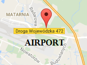

TRÓJMIEJSKI TURYSTA - interaktywny przewodnik po trójmieście
atrakcje turystyczne w trójmieście i okolicach
autor Piotr Słupczewski 2016
{{AngularLocations[getRandomIndex(AngularLocations.length)].desc}}
MAPA
WYBIERZ JĘZYK
polski
angielski
niemiecki
francuski
WYSZUKIWARKA OBIEKTÓW
wpisz nazwę poszukiwanego obiektu albo słowa kluczowe:
LEGENDA MAPY
Wszystkie
Gdańsk
Sopot
Gdynia
Inne
wybierz miasto
Wszystkie
Muzeum
Natura
Pomnik
Militaria
Sport
Jezioro
Extreme
wybierz kategorię
Wszyscy
Dzieci
Studenci
Seniorzy
wybierz kategorię wiek
>5km
5-10km
10-20km
>20km
wybierz odległość od lotniska
{{ $index+1 }} - {{ location.desc }}
INSTRUKCJA
Punktem odniesienia oznaczonym kropką jest Lotnisko im. Lecha Wałęsy (Lech Walesa Airport)

Kolorowe kółka oznaczają miejsca o większym zagęszczeniu atrakcji w danym obszarze. Kliknij na kolorowe kółko z liczbą atrakcji w danym rejonie w celu przybliżenia obszaru i uzyskania szczegółowych informacji o konkretnych lokalizacjach w zadanej okolicy
Obok znajduje się legenda - spis miejsc (POI) oznaczonych na mapie
Miejsca warto odwiedzenia (POI) są oznaczone "przypinkami" z oznaczeniami liczby porządkowej lokacji z listy
Poszczególne miejsca warte odwiedzenia są oznaczone znacznikami z liczbami np. 1 - Twierdza WIsłoujście, patrz legenda
Możesz ograniczyć wybór do jednego z miast lub skorzystać z filtrowania po kategoriach - W FAZIE TESTÓW
Jeżeli chcesz dodać swoje POI, skorzystaj z dostępnego narzędzia konwersji - potrzebujesz pliku CSV z współrzędnymi - PREMIUM
wszelkie prawa do tesktów oraz kodu źrodłowego zastrzeżone